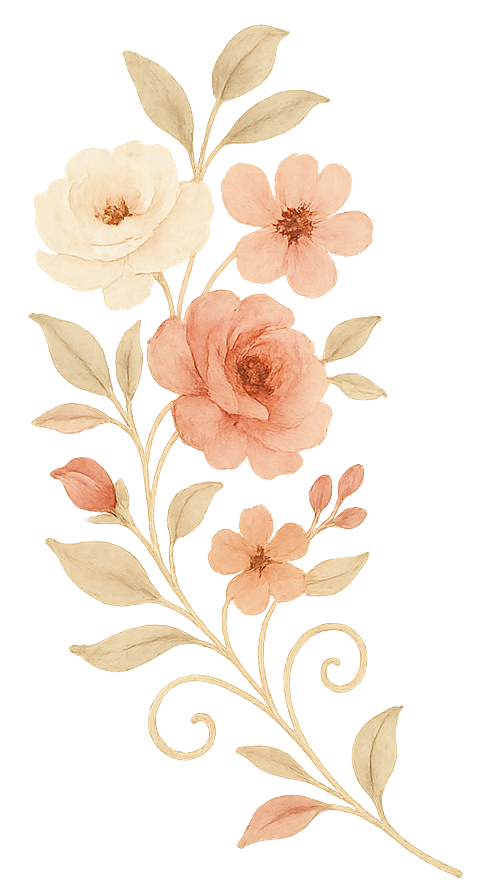

Cathy Wang

Cathy Wang
&
Brandon Drumheller
06.06.2026
Sunol, California
Cathy and Brandon met through Bumble in 2022. The two unknowingly showed up in matching blue outfits to their first date at Suju's in Fremont, California.
Over coffee and conversation, something just clicked. That one afternoon turned into countless more, from weekend adventures to late-night snacks and everything in between.
In April 2025, they got engaged at Bridalveil Falls in Yosemite—because what better place to lock it in than somewhere breathtaking.
Join us in the quiet town of Sunol for our wedding at the historic Elliston Vineyards. Originally the home of a San Francisco legend, this National Register of Historic Places estate features a stunning neo-Romanesque mansion and three acres of vines. We will be holding an outdoor ceremony on the lawn, followed by a cocktail hour on the patio and dinner and dancing in the Terrace Room. It's a peaceful, wine-country escape just a short drive from the bustle of the Bay Area.
Elliston Vineyards: 463 Kilkare Rd, Sunol, CA 94586
Shuttle: A complimentary shuttle will depart the DoubleTree lobby at 3:45 PM and return
from
the venue at 10:00 PM.
Driving: There is a parking lot on-site at Elliston Vineyards for those choosing to drive
or
use ride-sharing apps.
Doors open at 4:30 PM. The ceremony begins promptly at 5:00 PM. Please arrive 15 minutes before the ceremony begins to park and be seated. Stay tuned for a more detailed itinerary!
We are so grateful to our family and friends traveling from near and far to celebrate with us. To make your journey to the East Bay as smooth as possible, we have gathered some helpful information on travel, lodging, and local favorites.
For those flying in, there are multiple major airports that serve the San Francisco Bay Area. We recommend checking flights to find the best options for your schedule:
We have reserved a block of rooms for our guests at DoubleTree by Hilton Hotel Newark - Fremont.
Address:
How to Book:
Note: Please book by Friday May 8th, 2026 to receive the discounted group rate.
To allow our guests to celebrate fully and safely, we are providing a complimentary shuttle service between the DoubleTree and Elliston Vineyards. Details to come as we finalize the schedule.
Parking: If you choose to drive, there is ample complimentary parking available at Elliston Vineyards.
Ride Sharing: For those who'd prefer to leave the car behind, rideshare services like Uber and Lyft are easily available in the area and can drop you off right at the venue.
If you have some extra time to explore the area, here are a few of our favorite spots near Newark and Sunol:
Doors open at 4:30 PM. The ceremony begins promptly at 5:00 PM. Please arrive 15 minutes before the ceremony begins to park and be seated.
Our afternoon ceremony and cocktail hour will be outdoors, while the reception will take place indoors.
We’re having an unplugged ceremony. Please keep phones tucked away until the reception! We will have two professional photographers and a videographer to capture the moment.
Your invitation will indicate the number of seats we’ve reserved in your honor. We look forward to celebrating with you!
We love your little ones, but this will be an adults-only celebration. Thank you for understanding!
Please let us know on your RSVP — we will do our best to accommodate!
Cocktail Attire: Sharp suits and chic cocktail dresses welcome.
Expect sunny skies and warm temperatures in June. Outdoor ceremony-friendly attire is recommended!
San Jose (SJC): The most convenient option, about 20–25 mins from the east bay.
San Francisco (SFO): About 40–50 mins from the east bay; offers more flights but is subject
to
bridge traffic.
We have a room block at the DoubleTree by Hilton Newark - Fremont. To book at our discounted rate, please use our booking link or call +1 510-490-8390 and mention group code 91F. Please book by May 8, 2026 to secure the rate.
Shuttle: A complimentary shuttle will depart the DoubleTree lobby. Detailed depature times to
follow.
Driving: There is a parking lot on-site at Elliston Vineyards for those choosing to drive
or
use ride-sharing apps.
Your presence is the greatest gift. We're so grateful just to celebrate with you! For those who are feeling generous and wish to give, stay tuned for our registry.


{kind=link}
{kind=link}
{kind=link}
{kind=link}
{kind=link}